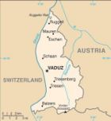

De: La Frikipedia, la enciclopedia extremadamente seria.
De: La Frikipedia, la enciclopedia extremadamente seria. De: La Frikipedia, la enciclopedia extremadamente seria.
| De la serie Países del planeta tierra: | |||||
| Lieschtenstain | |||||
|---|---|---|---|---|---|
| |||||
| Lema: No nos dieron la Eurooooo!!! | |||||
| Himno: Fiscal's Paradise
| |||||
| 
| |||||
| Capital | Vaduz | ||||
| Mayor ciudad | Vienna | ||||
| Lenguas oficiales | Aleman, Espiñol | ||||
| Gobierno | Reino | ||||
| Satanas | Papa Pitufo | ||||
| Área | Aproximadamente una cancha de futbol | ||||
| Población | El Rey y sus vecinos | ||||
| Moneda | lero | ||||
| Zona horaria | Siempre son las 12 | ||||
| Dominio Internet | .li | ||||
| Código telefónico | el de Suiza
| ||||
| ¿Que mierda es liechsfensteinein o como se llame? | |||||
Es ese país en medio de Austria y Suiza que reclamaron que si están en medio de los dos, por lo menos se juegue la Euro en Vaduz junto al riachuelo del monte.
La misma de Austria y Suiza.
También
El lero, se cree que el franco suizo, pero por la Euro les dijeron A tomar por el culo!!!
Bueno... este... mmm... ah! mira una camiseta de la Frikipedia!!
Ganamos un partido!!! 3-1 a las Islas Faroe!!! Ese dia es fiesta nacional! La liga esta formada por:
Lo que demuestra la innegable originalidad lichensteniana de las instituciones deportivas a la hora de poner nombres.
La historia de Liechtenstein se da después que Dios reventara a golpes de espaguetti a Austria, a Suiza y a Alemania, apenas le sacó 160 kms y después le dio pereza seguir, su idea era crear a Liechtenstein como un país más grande que la Unión Sovietica, pero saco el lado del hondureño, y se echó a dormir...zzzz.
  Imperios de Europa Imperios de Europa
|
|---|
| Eslovaquia |
Autor(es):